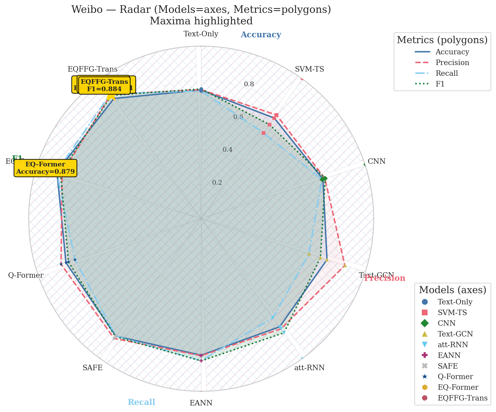
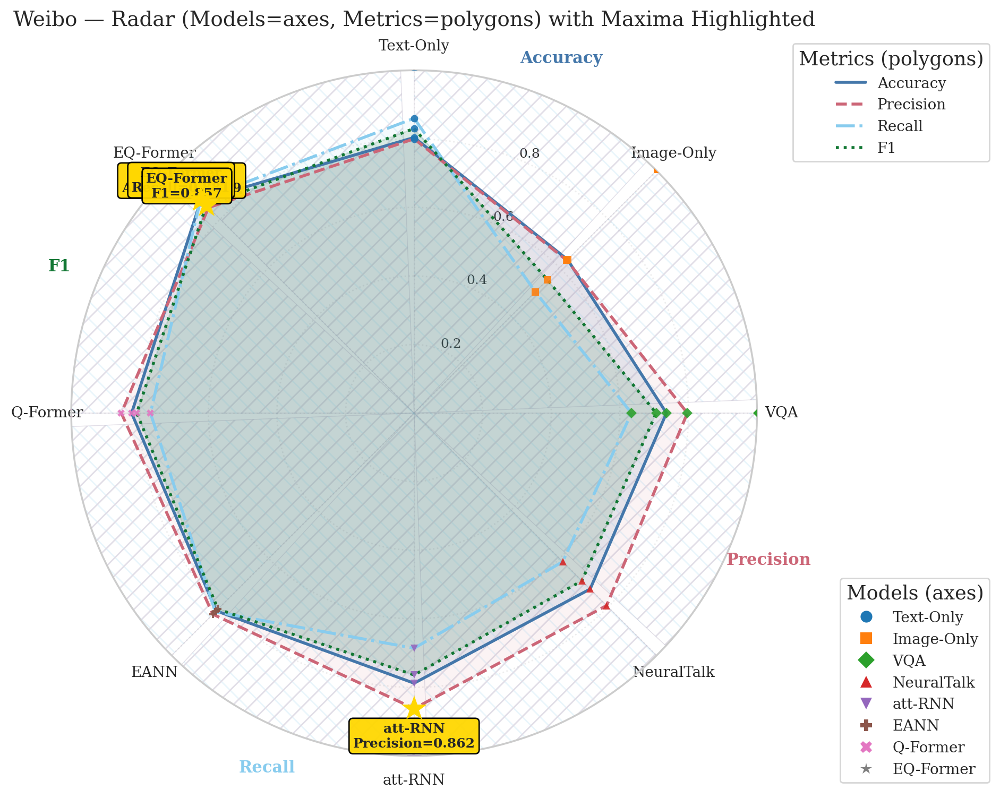
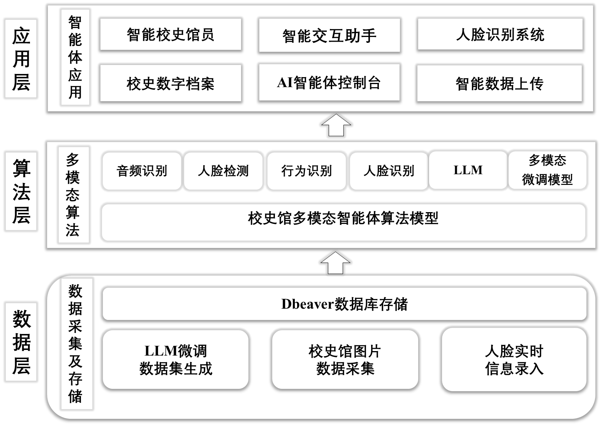

Hi, I'm Weibin 👋
I build AI projects that connect multimodal data, language models, and practical applications. Here are a few projects and research prototypes I've worked on.
Selected Projects
Multimodal Cordyceps Recognition
An image-and-text recognition system using a fine-tuned multimodal model to identify Cordyceps, with an emphasis on fine-grained features and robust predictions.
Multimodal Fake News Detection
Research prototypes combining semantic and emotion features, Q-Former fusion, gated retrieval-augmented generation, and graph attention for misinformation detection.


Interactive Intelligent History Museum
A multimodal, agent-based guide concept for interactive museum visits, bringing conversational guidance together with cultural content.

Video Intelligence & Smart Media Tools
Project experience includes video analysis, real-time subtitles, and AI-assisted video editing for media and monitoring workflows.
Thanks for stopping by. Explore my repositories or reach out on GitHub.